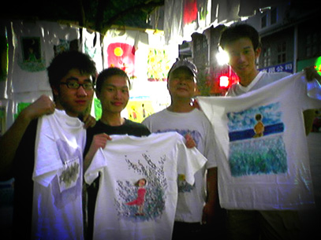

艺术家刘国安
9/2/2005 3:16:02 PM

西街上画衣服的人很多，来之前就听说这里可以买到很有个性的衣服。
我们走遍了所有画衣服的店，最终选择了西街口的一家。
因为觉得那里画Jimmy的画画的很好，而我很喜欢Jimmy的画。
后来和店主聊天，得知他叫刘国安，是退休的舞台艺术家。
他的为人随和，画画的时候特别专注。
我和朋友们都好喜欢他的作品。
我们聊了很多，他得知我是搞电脑美术的以后很支持，我们还说有机会回来要他教我们手绘，他爽快答应了。
呵呵，真希望有这样的机会。